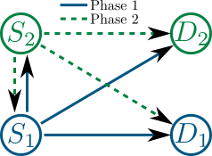
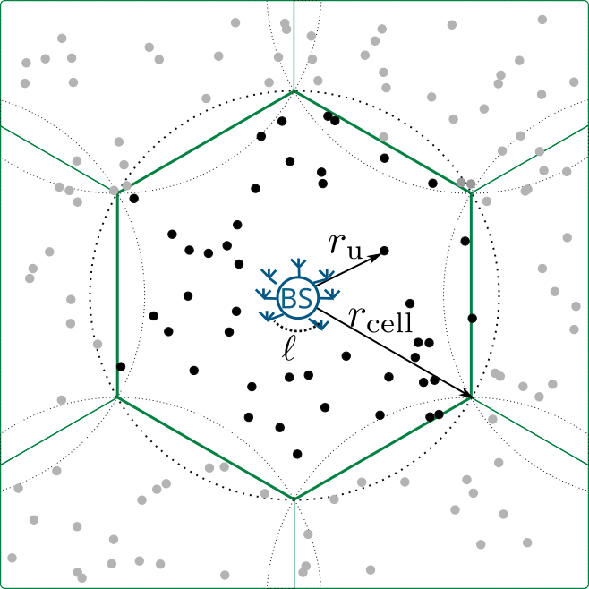
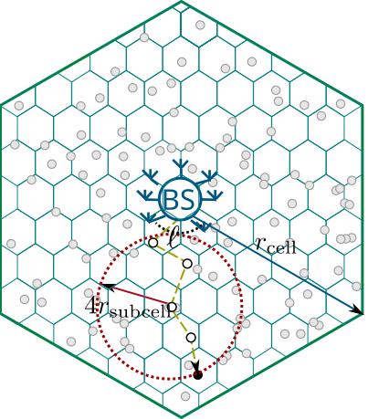
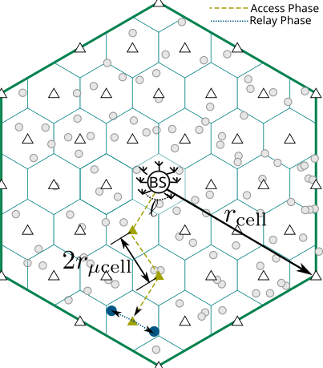
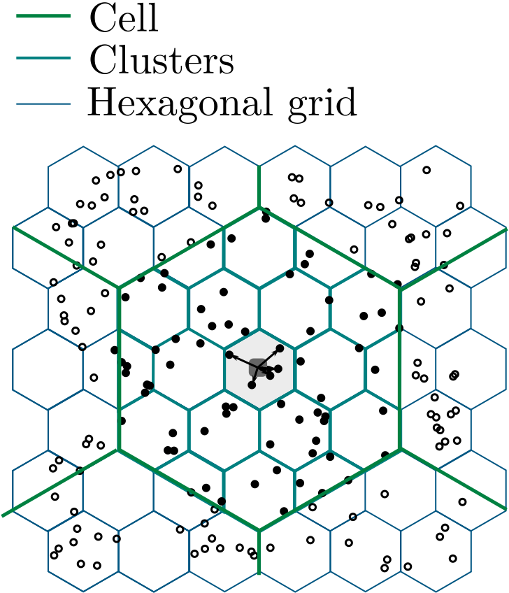
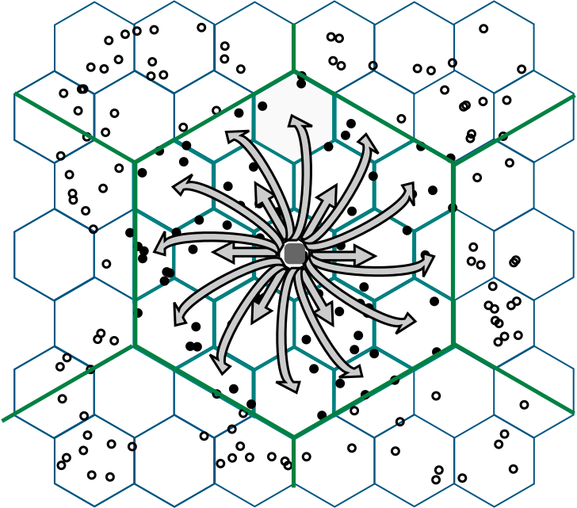
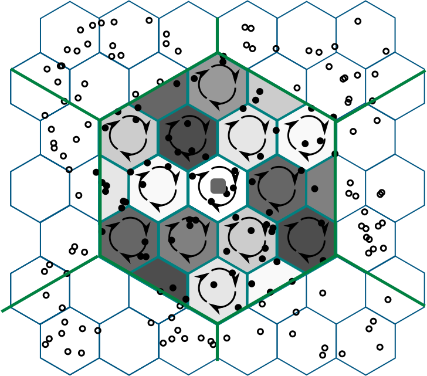
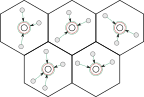
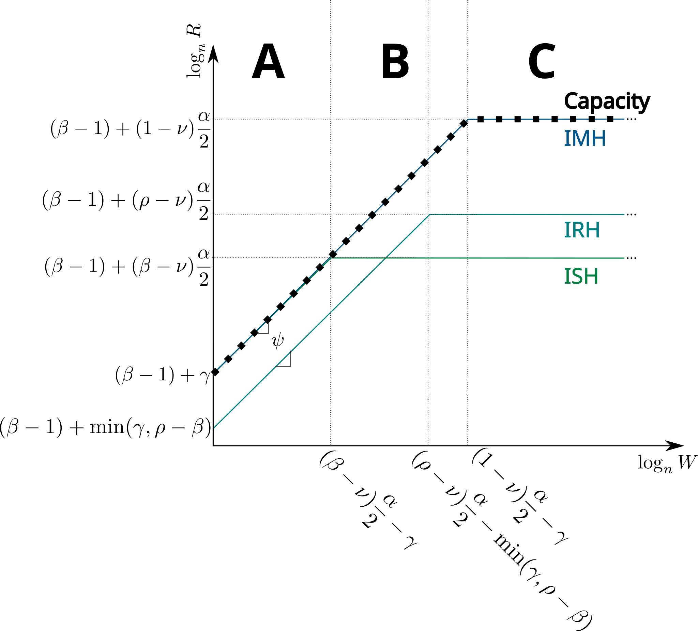
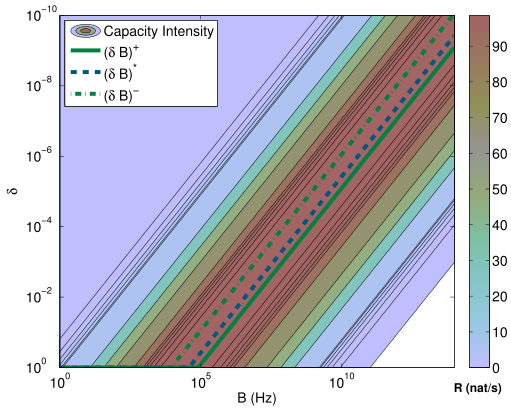

Cooperative Wireless Communications: Present and Future
Felipe Gómez Cuba
Thesis Presentation for Programa de Doutoramento en Enxeñería Telemática
May 8th 2015
Motivation
Mobile data traffic will increase nearly 11-fold between 2013 and 2018Cisco Visual Networking Index The wireless industry has reached the theoretical limit of how fast networks can goK. Fitcher, Connected Planet
One of these must be wrong
We know
The Shannon limit on a (AWGN) link
How to achieve it
But
The capacity of this

$2$-User Cooperative Channel
Is not $2\times$ the capacity of one of these
Point to Point Channel
So...
There is still room to improve rates
But analyzing one link at a time does not help
We must improve wireless in a networked context
Cooperative Wireless Communications: Present and Future
Thesis Presentation for Programa de Doutoramento en Enxeñería Telemática
Much higher than typical M2M (e.g. ZigBee 250Kbps)
Part 3 :: Theoretical Aspects
Cooperative Multi-hop Achieves
The Capacity Scaling of Future Cellular Networks
Scaling Laws model
Capacity scaling laws
Scaling laws for practical protocols
The importance of a good traffic model
Drastic Changes between 4G and 5G
4G Cellular
$\mu$Wave
$\leq 5$GHz
Scarce bandwidth
Better propagation
$1-4$ antennas
All-digital MIMO
Wide-beam or omnidirectional
Needs interference cancelling
Range $\geq500$m
Lower AP density
Direct link to all users
Wall penetration
Radial cell shape
5G Cellular
mmWave
$5-500$GHz
Abundant bandwidth
Worse propagation
10s, 100s antennas
Hybrid analog-digital MIMO
Narrow directional beams
Most interference directions negligible
Range $\leq200$m
Higher AP density
Multi-hop backhauling
Wall reflection
Building-defined cell shape
Scaling Laws Model
Random Cellular Network Scaling

BS Cell with scaling dimensions
Quantity
Scaling with $n$
Exponent range
Area
$A=A_0 n^{\nu}$
$[0,1]$
No. of BS
$m=m_0 n^{\beta}$
$[0,1]$
No. of BS antennas
$\ell=\ell_0 n^{\gamma}$
$[0,1-\beta]$
Bandwidth
$W=W_0 n^{\psi}$
$[0,\infty]$
No. of fixed RNs
$k=k_0 n^{\rho}$
$[\beta,1]$
Scaling Laws Model
Characterization of Capacity Region
DL/UL throughput $R(n)$ is feasible if the BSs can transmit to/receive from all nodes $R(n)$ bps at the same time
The throughput capacity scaling of a network is $\Theta(n^{x})$ iff
$$\exists c_1< c_2\diagup \begin{array}{c}
{\displaystyle \lim_{n\to\infty}}P\left(R(n)=c_1n^{x} \textrm{ is feasible}\right)=1\\
{\displaystyle \lim_{n\to\infty}}P\left(R(n)=c_2n^{x} \textrm{ is feasible}\right)<1\\
\end{array}$$
Protocol Models
Multi-hop Protocols

Infrastructure Multi-Hop

Infrastructure Relay-multi-Hop
Protocol Models
Infrastructure Hierarchical Cooperation Protocol

Phase I: BS subcell

Phase II: Cooperative MIMO

Phase III: Local subcells
Additional layers recursively employed in phases I and III
Capacity Scaling Law
Contribution C1.5.1: Throughput Capacity Scaling Laws for Wideband Cellular Networks
The rate from the BS to each node is upper bounded by a function with scaling
\begin{equation}
R_{\mathrm{DL}(n)}\leq \Theta\left(n^{\beta-1+\min\left(\psi+\gamma,(1-\nu)\frac{\alpha}{2}\right)}\right)
\end{equation}
IMH DL feasible rate per node scales as
\begin{equation}
R_{\mathrm{IMH-DL}}(n)\sim
\Theta\left(n^{\beta-1+\min\left(\psi+\gamma,(1-\nu)\frac{\alpha}{2}\right)}\right)
\end{equation}

Upper bound layout
Cut set bound to rate
All BS and all nodes pool antennas together in a cooperative massive MIMO
scales with $n$ as
\begin{equation}
R_{\mathrm{u}}(n) =\begin{cases}\Theta\left( W_{\mathrm{u}}(n)\min(\ell_t(n),\ell_r(n))\right)&
W_{\mathrm{u}}^*\geq\Theta\left(W_{\mathrm{u}}(n)\right)\\
\Theta\left(\ell_r(n)\frac{P_\mathrm{u}(n)d(n)^{-\alpha}}{N_\mathrm{I}(n)} \right)&
W_{\mathrm{u}}^*<o(W_{\mathrm{u}}(n))\\
\end{cases}
\end{equation}
where $W_{\mathrm{u}}^*(n):=\frac{\ell_r}{\min(\ell_\mathrm{t},\ell_\mathrm{r})}\frac{P_\mathrm{u}(n)d(n)^{-\alpha}}{N_\mathrm{I}(n)}$
The noise+interference PSD $N_{\mathrm{I}}$ scales as
\begin{equation}
\label{eq:NIDL}
N_{\mathrm{I,IMH-DL}}=\Theta\left(n^{\max\left(\frac{\alpha}{2}(1-\nu)-\psi-\gamma,0\right)}\right)
\end{equation}
When $N_{\mathrm{I}}$ is dominated by interference (first term), all nodes lie (W.H.P.) before a critical distance ($r^*$ such that $W_{\mathrm{u}}^*(n)<W_{\mathrm{u}}$), and vice-versa.
Contribution C1.5.3: Only Cooperative Multi-hop Achieves Capacity Scaling in All Regimes

Bandwidth Scaling Exponents
All links DoF limited at small bandwidth
As $W\to\infty$, links become power limited depending on the protocol.
Better Traffic Model
Contribution C1.5.4:Data Flow Models Are Critical
Ad-hoc traffic
Random destinations across the whole network
Infrastructure use optional
Direct transmission suboptimal
Multi-hop for extense networks
Hierarchical Cooperation for dense networks
Cellular traffic model
Nearest destination, short range
Must reach infrastructure
Direct transmission for dense narrowband network
Multi-hop optimal in all networks
Hierarchical cooperation unnecessary
Part 3 :: Practical Aspects
Challenges of Cooperative
Fifth Generation Cellular Networks
Intormation Theoretic Open Questions.
Value of very large bandwidth
Multi-user in wideband
Physical layer strategies.
Signaling with a bandwidth limit
Massive SIMO to bypass BW limitation
MAC layer algorithms.
Resource Allocation
Topology Variations
Value of Very Large Bandwidth
Contribution C1.6.5: Unified Bandwidth Occupancy Framework for Peaky and Non-peaky Wideband Signals
Capacity bounds vs BW and $\delta$ in non-coherent channel (w/ J. Du)

Bandwidth $B$
Peakyness factor
$$P(|x|^2>0)=\delta$$
$SNR=\frac{P}{N_0B\delta}$
Bandwidth occupancy $B\delta$
Near-linear-in-power at the critical point $(B\delta)^*$
$$\lim_{B\delta\to(B\delta)^* }\frac{C(B\delta)}{B}=N_{\mathrm{r}}\mathrm{SNR}-\frac{N_{\mathrm{r}}(N_{\mathrm{r}}+N_{\mathrm{t})}}{N_{\mathrm{t}}^2}\mathrm{SNR}^{1+\alpha}+o(B^{-(1+\alpha)})$$
Multi-user in Wideband
Contribution C1.6.6: Frequency Division Achieves Critical Bandwidth - Analysis of Multiuser Channels
The multi-user critical bandwidth ($B_{x}^{\mathrm{crit}}$) of a multi-user channel $x$ is the bandwidth above which the rate region does not grow.
Analysis of $N$-user MAC
Using FDMA: $N$ Orthogonal point-to-point subchannels
Plus two submitted and one nearly ready for submission
Six published conference papers
Plus two accepted for this summer
One research-license simulation software released
Journal
Gómez-Cuba, F.; Rangan, S.; Erkip, E. and González-Castaño, F.J., "Capacity Scaling of Cellular Networks with Arbitrary Infrastructure Density and Bandwidth," in preparation
García-Rois, J.; Gómez-Cuba, F.; González-Castaño, F.J.; Burguillo-Rial, J.C:., Rangan, S. and Lorenzo, B. "On the Analysis of Scheduling in Dynamic Duplex Multi-Hop mmWave Cellular Systems'' IEEE Transactions on Wireless Communications (submitted)
Gómez-Cuba, F.; Du, J.; Médard, M. and Erkip, E., "“Unified Capacity Limit of Non-coherent Wideband Fading Channels" IEEE Transactions on Information Theory (submitted)
Gómez-Cuba, F.; Asorey-Cacheda, R; and González-Castaño, F.J., "Smart Grid Last-Mile Communications Model and Its Application to the Study of Leased Broadband Wired-Access," , IEEE Transactions on Smart Grid, vol.4, no.1, pp.5,12, March 2013
Gómez-Cuba, F.; Asorey-Cacheda, R.; González-Castaño, F.J. and Huang, H., "Application of Cooperative Diversity to Cognitive Radio Leasing: Model and Analytical Characterization of Resource Gains," IEEE Transactions on Wireless Communications, vol.12, no.1, pp.40,49, January 2013
Sendín-Raña, P.; González-Castaño, F. J.; Gómez-Cuba, F.; Asorey-Cacheda, R. and Pousada-Carballo, J. M., "Improving Management Performance of P2PSIP for Mobile Sensing in Wireless Overlays". Sensors, 13(11), 15364-15384 2013.
Gómez-Cuba, F.; Asorey-Cacheda, R. and González-Castaño, F.J., "A Survey on Cooperative Diversity for Wireless Networks," IEEE Communications Surveys & Tutorials , vol.14, no.3, pp.822,835, Third Quarter 2012
Conference
Gómez-Cuba, F.; Du, J.; Médard, M.; Erkip, E., "Bandwidth Occupancy of Non-Coherent Wideband Fading Channels" to appear in IEEE International Symposium on Information Theory (ISIT) 2015
Ford, R.; Gómez-Cuba, F.; Mezzavilla, M.; Rangan, S., "Dynamic Time-domain Duplexing for Self-backhauled Millimeter Wave Cellular Networks" to appear in IEEE International Converence on Communications (ICC), June 2015
Chowdhury, M.; Manolakos, A.; Gómez-Cuba, F.; Erkip, E. and Goldsmith, A.J. "Capacity Scaling in Noncoherent Wideband Massive SIMO Systems" EEE Information Theory Workshop (ITW), April 2015
Gómez-Cuba, F.; Rangan, S. and Erkip, E., "Scaling laws for Infrastructure Single and multihop wireless networks in wideband regimes," IEEE International Symposium on Information Theory (ISIT), July 2014
Gómez-Cuba, F. and González-Castaño, F.J., "Improving third-party relaying for LTE-A: A realistic simulation approach," IEEE International Conference on Communications (ICC), June 2014
Gómez-Cuba, F.; González-Castaño, F. J. and Muñoz-Castañer, Jorge, "Is Cooperative Spectrum Leasing by Third-Party Relays Advantageous in Next-Generation Cellular Networks?," 20th European Wireless Conference, May 2014
Gómez-Cuba, F.; González-Castaño, F.J. and Pérez-Garrido, C.P., "Practical Smart Grid traffic management in leased Internet access networks," IEEE International Energy Conference (ENERGYCON), May 2014
Gómez-Cuba, F.; Asorey-Cacheda, R. and González-Castaño, F.J., "WiMAX for smart grid last-mile communications: TOS traffic mapping and performance assessment," 3rd IEEE PES Conference on Innovative Smart Grid Technologies Europe (ISGT Europe), Oct. 2012